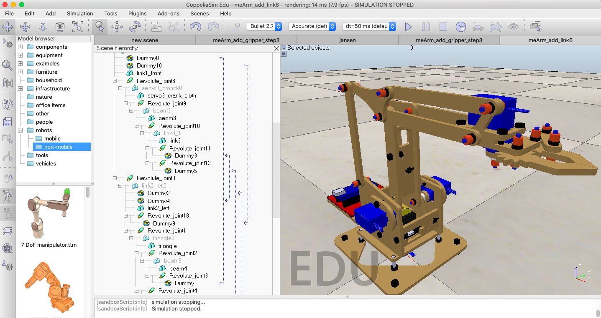

Stage1 <<
Previous Next >> Task 2
Task 1
Computer-aided design
Computer-aided design (CAD) uses the mathematical and graphic processing power of the computer to assist the engineer in the creation, modification, analysis, and display of designs.
Many factors have contributed to CAD technology being a necessary tool in the engineering world for applications including shipbuilding, automotive, aerospace, medical, industrial, and architectural design, such as the computer's speed in processing complex equations and managing technical databases.
若從產品開發流程與團隊成員的角度而言, 電腦輔助設計的本質在運用電腦與周邊相關軟硬體, 以達到多人參與協同產品設計流程時, 針對每一個細節與項目, 都能夠少一點負擔 (less burden), 多一些建樹 (more achievements) 的目標, 期望在產品從概念至回收的生命週期 (life cycle) 中, 能以最少成本付出, 取得最大效益.
Live streaming and on-line meeting
Three-minute talking to describe your design intent.
課程設計目標
藉由這個課程希望讓學員了解電腦輔助設計的發展源起, 當時建構工具與發展系統的時空背景, 超過五十年的快速發展至今, 機械設計工程師在採用電腦輔助設計流程與工具解決問題時, 應該如何掌握問題的關鍵核心, 探討最具價值的項目, 並以協同互助學習的方式, 面對未來發展趨勢, 各自找到值得長期努力且能有效自我期許的目標.
About computer
computer science is not a science (當時的科系名稱為 Electric Engineering and Computer Science). It's also not really very much about computers. And that is, when some field is just getting started and you don't really understand it very well, it's very easy to confuse the essence of what you're doing with the tools that you use.
I think in the future people will look back and say, yes, those primitives in the 20th century were fiddling around with these gadgets called computers, but really what they were doing is starting to learn how to formalize intuitions about process, how to do things, starting to develop a way to talk precisely about how-to knowledge.
任務一:
1-1: 請閱讀 About 頁面後, 請利用三分鐘的時間, 說明您看到什麼?
請下載 meARM.7z, 並分別根據其中的零件檔案尺寸, 分別在 SolidWorks, Inventor, NX 與 Solvespace 完成零組件設計繪圖.
請問何謂 Forward 與 Inverse Kinematics? 請根據下列參考資料推導相關運算方程式與函式.
meArm_unassembled.ttt (請根據 clean model tutorial 簡化各零組件後, 完成動態場景組立)
https://fluxhead.com/mearm.org/mearm-assembly.html
MeArmPiTechnicalOverviewV0-3DRAFT.pdf
https://raw.githubusercontent.com/yorkhackspace/meArm/master/ik.cpp
ECE 4760 - ECE 5725 Robotic Candy Sorter.pdf
https://github.com/PeterSlater/InefficientSkittleSorter
https://github.com/aquila12/me-arm-ik
jansen.ttt
https://github.com/mdecourse/meArm/blob/master/Geometry.md
InverseKinematics.pdf
https://github.com/mdecourse/2017springcd/blob/gh-pages/data/jansen_8link_w7.7z
uarm.ttm
uarm with gripper.ttm
https://github.com/mdecourse/meArmPi (Python)
https://github.com/mdecourse/meArm (C++)
Robot Manipulator Control with Inverse Kinematics PD-Pseudoinverse Jacobian and Forward Kinematics Denavit Hartenberg.pdf
https://github.com/mdecourse/tossing-robot-simulation (投擲競賽)
https://github.com/mdecourse/Robotarm-ABB140-AutoDrawing
控制系統設計:
Online Arduino simulator: https://wokwi.com/
https://github.com/orgs/wokwi/
https://github.com/wokwi/avr8js
https://forum.arduino.cc/t/virtual-online-arduino-simulator-wokwi-arduino-simulator/698481/2
Servo motor simulation: https://wokwi.com/arduino/libraries/Servo/Sweep
https://tawjaw.github.io/Arduino-Robot-Virtual-Lab/
https://github.com/arcostasi/avr8js-electron-playground
https://markmegarry.github.io/AVR8js-Falstad/
https://www.tinkercad.com/
Uno Arduino Simulator:
https://www.sites.google.com/site/unoardusim/services
https://diyprojects.io/drive-nema-17-stepper-motor-rpimotorlib-python-library-a4988/#.YIPYQz9-UdU
https://github.com/gavinlyonsrepo/RpiMotorLib
http://www.python-exemplary.com
https://lcgamboa.github.io/
https://github.com/lcgamboa/picsimlab

1-2: 請使用 Wink (Tutorial) 在個人頁面中建立一個有關任務1的內容說明影片.
Stage1 <<
Previous Next >> Task 2